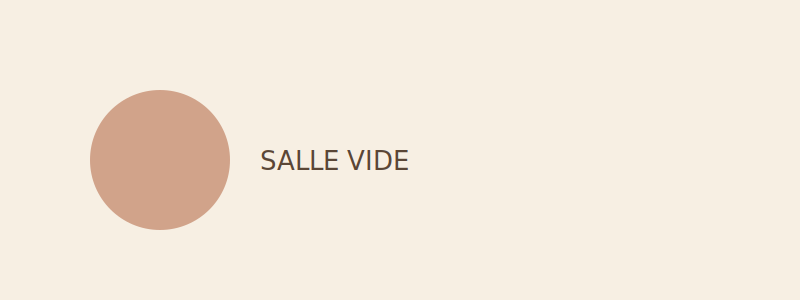
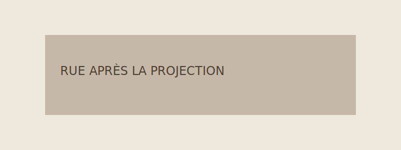
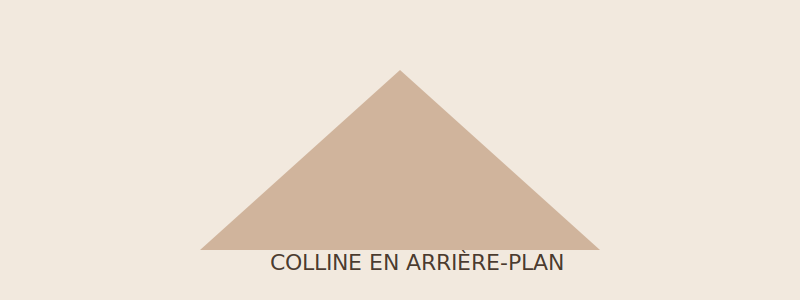

Affiches, plans fixes et fragments d'images qui pourraient accompagner
les projections de la salle.

Salle vide quelques minutes avant la première séance.

Rue calme après la projection de fin de soirée.
Ciel voilé au-dessus de la ville, juste avant la séance.

Colline à l'horizon, décor possible d'un prochain tournage.